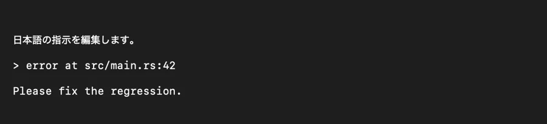

At home on macOS
Native tabs and menus, a global-hotkey quick terminal, a scratch terminal, floating panes, Quick Look word lookup, secure keyboard entry, and an AppleScript dictionary that covers Ghostty 1.3's.
Apple Silicon · macOS 13 or later
v0.9.12 GPU terminal · Rust · macOS & Linux · MIT
cat huge.log, build logs, CI streams, a board of coding agents. Noa is built independently in Rust, aims for Ghostty compatibility, and keeps the output moving.
From Ghostty in two steps · Apple Silicon · or Linux tarball · from source
brew tap simota/noa https://github.com/simota/Noa.git
brew install --cask simota/noa/noa
# optional: bring your Ghostty config
/Applications/Noa.app/Contents/MacOS/Noa --import-ghostty-config01 Throughput
Sustained output throughput and bulk scrolling. When the output floods in, parsing and rendering spread across cores, so Noa spends the hardware to stay ahead of it. That's a desktop-first trade, made on purpose.
render.throughput · plain / ANSI / CJK
220–233MB/s
CJK is the top of the band at 233 MB/s. Wide characters aren't the slow path.
| Axis | Result | Role |
|---|---|---|
| render.throughput | 220–233 MB/s | headline |
| scroll proxy | 54 ms | headline |
| idle input latency | 1.2–1.3 ms | supporting |
| idle RSS, settled | 52 MB | supporting |
| cmd.overhead (zsh) | 1336 µs | supporting |
Every number comes from the bundled harness, bench/run_all.sh, and performance changes are gated on it: a headline number can't be bought with a regression in input latency under load, CPU under load or idle memory. Results are machine-scoped, so rerun it on your hardware.
cargo build --release -p noa
bench/run_all.sh$ cat 進捗.md ## 今日の作業 - 宽字符渲染: 完成 - 한글 입력 테스트: 통과 - 絵文字 👩💻 🇯🇵 👍🏽 1️⃣ $ へんかん
=> != && -> via liga / calt.02 Agent orchestration · Noa +ctl
An orchestrator, an agent or a script, spawns worker panes running Claude Code, Codex, agy or any command. It types prompts into them, waits on their reported state, reads their output and closes them. The board keeps the ones that need you on top.
orchestratorclaude · main
$ noa() { "$NOA_BIN" +ctl "$@"; } $ noa spawn --worktree --tier deep --label vt-parser -- claude {"paneId":"12","worktree":"~/src/Noa-wt/vt-parser","branch":"orch/vt-parser"} $ noa spawn --worktree --tier standard --label cjk-reflow -- codex {"paneId":"13","worktree":"~/src/Noa-wt/cjk-reflow","branch":"orch/cjk-reflow"} $ noa spawn --worktree --tier light --label linux-ci -- agy {"paneId":"14","worktree":"~/src/Noa-wt/linux-ci","branch":"orch/linux-ci"} $ noa wait --children --stall 120 {"paneId":"12","reason":"permission","state":"permission"} $
Noa +ctl board5 workers
! approval 1 · vt-parser · claude · orch/vt-parser
spawn --worktree starts a worker in its own git worktree on branch orch/<label>. close --prune removes the worktree and branch afterwards, and never forces it.
--tier light|standard|deep adds the model and effort flags for a claude, codex or agy worker.
sleepClaude Code, Codex and agy report their state through OSC 7501, with no hooks needed. wait returns on finished, permission, input, error or exit. --stall catches one that went quiet.
send refuses a pane whose agent waits on an approval or a question, checking before typing and again before Enter. Pass --answer to answer on purpose.
A worker can start workers of its own, one level deep. They're drawn under it as a tree, and closing a worker closes the ones it started.
Numbers pick a worker, n jumps to the next one that needs you. Every state has a mark that reads without colour, and the board speaks Japanese in a Japanese locale.
Turn on the control server that +ctl talks to:
# ~/.config/noa/config
server-enable = true
server-scopes = read,control,inputThen, from inside the orchestrator's pane:
noa() { "$NOA_BIN" +ctl "$@"; }
pane=$(noa spawn --label tests -- claude | jq -r .paneId)
noa send "$pane" --enter --wait --timeout 540 --tail 40 "Fix the failing test in crates/noa-vt"
noa read "$pane" --scrollback --max-bytes 65536
noa close "$pane"Each command prints one JSON object per line. Read the agent workflow guide


The View menu, or the command palette, opens each of these in a window of its own:
03 Compatibility
Noa aims for the observable behavior of Ghostty: the same key = value config and keybind syntax, the same theme catalog, and Ghostty's GTK keybindings on Linux. It's an independent reimplementation and contains no Ghostty source code.
# Homebrew install in /Applications
/Applications/Noa.app/Contents/MacOS/Noa --import-ghostty-config
# from a source checkout
cargo run -p noa -- --import-ghostty-configSupported settings and keybind lines are copied unchanged. Anything Noa doesn't support is kept as a comment, and an existing Noa config is never overwritten.
Where it stands: release 0.7.0 brought Noa in line with Ghostty 1.4.0, and parity is protected by fixture-based regression tests. Automated differential comparison against Ghostty is still planned, and some advanced behavior may still differ.
Every Ghostty theme is bundled and picked by name. theme = Noa is built from the mascot's palette: charcoal, Ember white and a single orange accent on the cursor and ANSI yellow.
Preview themes in the settings overlay (⌘,), which writes back to your config. Edits to the file reload while Noa runs.
04 Platforms & automation
Native tabs and menus, a global-hotkey quick terminal, a scratch terminal, floating panes, Quick Look word lookup, secure keyboard entry, and an AppleScript dictionary that covers Ghostty 1.3's.
Apple Silicon · macOS 13 or later
X11 and Wayland. Ghostty's GTK keybindings are the defaults: ctrl+shift+c / v to copy and paste, ctrl+shift+t for a tab, ctrl+shift+p for the palette. Vulkan, or OpenGL ES as a fallback.
macOS-only pieces such as the menu bar, Ember and AppleScript are absent. Linux guide
noa-serverJSON-RPC over WebSocket with token auth and scoped access. Read pane text, send input, subscribe to pane output, or attach a pane as a raw VT stream.
{"jsonrpc":"2.0","id":3,
"method":"noa.getText",
"params":{"paneId":"1",
"source":"scrollback",
"maxBytes":65536}}minimum-contrast floorUnder the hood: a from-scratch DFA parser (noa-vt) and terminal model (noa-grid) with no windowing dependencies, and a wgpu renderer that draws instanced cells from a per-frame snapshot. Full feature list
05 Get started
Homebrew on an Apple Silicon Mac, a tarball on Linux, or build it from source.

brew tap simota/noa https://github.com/simota/Noa.git
brew install --cask simota/noa/noaInstalls the archive from the matching GitHub Release. Then, optionally, bring your Ghostty settings with --import-ghostty-config.
Tagged releases publish Noa-<version>-linux-x86_64.tar.gz. To build one from a checkout and install it into ~/.local:
scripts/package-linux.sh
tar -xzf target/release/Noa-*-linux-*.tar.gz -C /tmp
/tmp/Noa-*-linux-*/install.sh # or: --prefix /usr/local
/tmp/Noa-*-linux-*/install.sh --uninstall # remove againBuild dependencies (Debian/Ubuntu names):
sudo apt install build-essential pkg-config libfontconfig1-dev libfreetype-dev \
libxkbcommon-dev libwayland-devThe tarball adds a desktop entry, AppStream metadata and icons. At runtime Noa needs a Vulkan driver or OpenGL ES. See the Linux guide.
From a clone of github.com/simota/Noa:
cargo run -p noaA double-clickable macOS app:
scripts/bundle-macos.sh
open target/release/Noa.appThe bundle script makes a local, ad-hoc-signed app. It isn't notarized.
Noa, the mascot, shares the terminal's name: low-key, deadpan, and quietly means every bit of it. Ember is her pure-white ghost. It never speaks, and does the reacting so she doesn't have to. Set ember-idle-after and it shows up, silently, in a pane you've left resting.